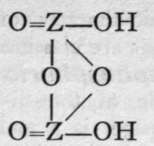

Elements Of Odd Valency
Description
This section is from the book "Modern Chemistry", by William Ramsay. Also available from Amazon: Modern Chemistry: Theoretical and Modern Chemistry (Volume 2).
Elements Of Odd Valency
The highest valency shown by elements of the nitrogen group, apart from a somewhat questionable pernitric acid, is five. This is illustrated by the formulae of the pentoxides, N2O5, P2O5, As2O5, Sb2O5, and V2O5. But these compounds possess very different stability, and the elements show different behaviour in uniting with oxygen. Nitrogen and oxygen do not unite except when electric sparks are passed through a mixture of the two gases, or when a high-tension current is passed through air. It is doubtful whether heat alone is the cause of this union ; it is more probable that energy must be imparted to the combining gases in an electrical form. The act of combination, in which the first product is NO, which, however, is partially oxidised to NO2 when the temperature falls below 6oo°, is attended by great absorption of heat (21,600 calories for the union of 14 grams of nitrogen with 16 grams of oxygen) ; and this energy must be supplied if union is to take place. The union of NO with O to NO2, however, is accompanied by an evolution of 13,100 calories; hence it occurs spontaneously, as soon as the temperature is sufficiently reduced to permit of the existence of NO2. On the other hand, phosphorus burns brilliantly in air, and if excess of oxygen be present, the so-called pentoxide is produced ; according to the vapour-density, however, the formula is P4O10. If air be slowly passed over heated phosphorus, on the other hand, the lower oxides P4O6 and P2O4 are formed. It is not possible to dehydrate phosphoric acid, HPO3, completely, so as to obtain P2O5. When arsenic burns in air, arsenious oxide, As4Of), is the product; with antimony, Sb4O6 ; but vanadium pentoxide, V2O5, is formed when the element or one of the lower oxides is heated in air.
The pentoxides behave differently when treated with water. While N2O5 and P4O10 unite with water with a hissing noise to form HNO3 and HPO3, As4O10 slowly reacts to produce H3AsO4, and probably H3VO4 is the result of dissolving V2O5 in water; the corresponding Sb2O5 is insoluble in water.
Acid Chlorides
The clue to the constitution of the acids of these elements is afforded by the oxychlorides, as in the case of carbon and silicon. No oxychloride containing pentad nitrogen is known, but phosphoryl chloride, 0=PC13, and antimonyl chloride, 0=SbCl3, are produced by the action of a small quantity of water on the respective pentachlorides : C12=PC13 + H2O = 0=PC13 + 2HCI. The former is a colourless liquid boiling at 1070, and the latter a white, crystalline solid. Phosphoryl chloride reacts with hydrogen sulphide, yielding the corresponding phosphoryl sulphide: 0=PC13 + H2S = S=PC13 + H2O, and hydrogen sulphide acts on antimony pen-tachloride, with formation of S=SbCl3. 0=VC13 is produced by direct union of VO with chlorine. It is a yellow liquid boiling at 137°. The vapour-densities of phosphoryl and vanadyl chlorides lead to the ascribed formulas.
Ortho-, Pyro'Y And Meta-Acids
With water, these substances exchange chlorine for hydroxyl, thus: 0=PC13 + 3H-OH = 0=P(OH)3 + 3HCI. This establishes the formula of ortho-phosphoric acid. The name ought, in strictness, to be applied to P(OH)5; but, as the true ortho-phosphoric acid is unknown, it has been transferred to what should be termed its first anhydride. The corresponding nitric acid is unknown. We have thus the series: 0=PCL, 0=P(OH)3, 0=As(OH)3, and 0=Sb(OH)3.
On heating these bodies the elements of water are lost, and the " meta-acids " are formed; at a temperature of about
2000, 0=P(OH)3 yields and j]
; the former is a glass, the latter a pearly substance. On adding water to metaphosphoric acid it dissolves as such, and, on neutralisation, it yields a series of metaphosphates ; but metarsenic acid, when treated with water, is reconverted into orthoarsenic acid ; a similar change can be produced with metaphosphoric acid, but only after prolonged boiling.
Di-Acids
We are unacquainted with any normal di-acid of this group, but a number of anhydrides are known. If Z stand for any element of this group, the series should run as follows :-
Di-acid.
1st Anhydride.
2nd Andryhide.
3rd Anhydride.
Neither the di-acid nor the first anhydride are known in any case, but the second anhydride, which is generally called the " pyro99 acid, because it is formed in certain cases by heating the " ortho 99 acid, is known with phosphorus, arsenic, antimony, and vanadium. Pyrophos-phoric acid is formed at 2150; but the change is not complete, and if a higher temperature be employed the meta-acid is also produced. Pyroarsenic acid is formed by heating the ortho-acid to 140°-16o°. Pyroantimonic acid, however, is best prepared by the action of boiling water on antimonyl chloride, 0=SbCl3; the ortho-acid, which is probably formed first, loses the elements of water, forming the pyro-acid, H2Sb2Or Pyro-phosphoric acid is a syrupy glass-like substance; pyro-arsenic acid forms hard crystals, and pyro-antimonic acid is a sparingly soluble white powder.
Continue to: